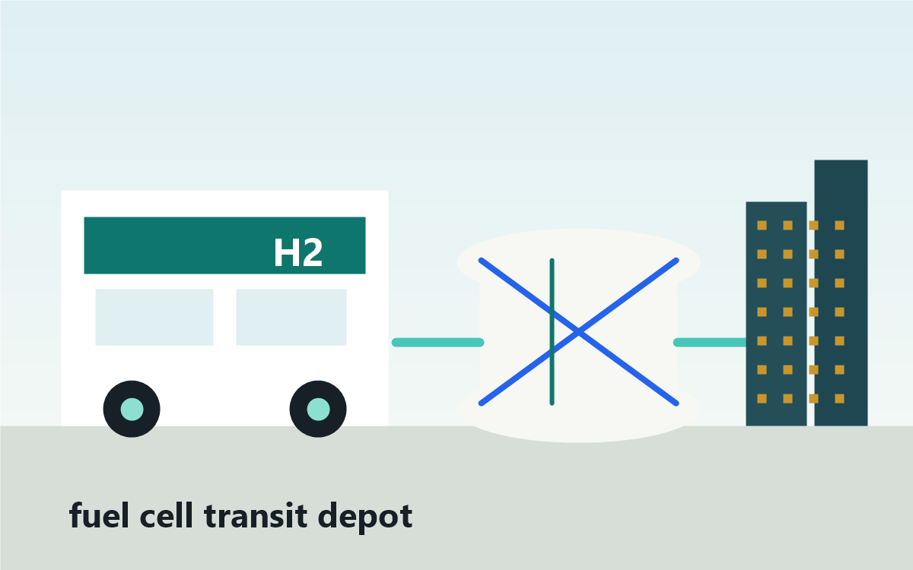

Fuel cell principle
Hydrogen and oxygen are converted directly into electricity and water.
Page 2
Hydrogen mobility is no longer only a lab idea, but it is still selective. It is used today where fast refueling, long range, quiet electric drive, and centralized fueling can outweigh the energy-transfer losses of making hydrogen, storing it, and converting it into vehicle motion.

How it works in vehicles
A fuel cell electric vehicle stores compressed hydrogen in high-pressure tanks. The fuel cell stack combines hydrogen from the tank with oxygen from air, making electricity for the motor, heat for thermal management, and water as the main tailpipe by-product.
The practical question is not whether the vehicle can work. It can. The hard part is the ecosystem: reliable clean hydrogen, safe storage, high-utilization stations, trained maintenance teams, standards, and enough vehicles to justify the infrastructure.
Hydrogen and oxygen are converted directly into electricity and water.
NASA's Apollo-era systems show fuel cells can provide compact power where mass matters.
Automakers and transit agencies test stack durability, crash safety, tanks, cold starts, and fueling standards.
Cars remain station-limited, while buses, trucks, depots, ports, and prototype cities are stronger test beds.
Visual proof board
These visuals show the evidence behind the mobility argument: hydrogen vehicles can work, but the strongest early cases are places where fueling, maintenance, routes, and data are organized together.
The vehicle is technically clean at the tailpipe, but the full picture depends on how the hydrogen was produced and how much energy was lost before the motor turns the wheels.
This is why passenger FCEVs are geographically narrow. A car is convenient only if stations are reliable across normal travel routes.
This is why Canadian bus pilots matter. Central fueling lets an agency measure winter range, refueling time, uptime, maintenance, and cost before buying a full fleet.
The pattern is not "hydrogen is good for every vehicle." The pattern is that hydrogen improves when routes are long, downtime is costly, fueling is centralized, and the system can collect evidence from daily operation.
Vehicle system visual
This diagram breaks the car into the parts that make hydrogen mobility different from a battery-only EV: compressed tanks, a fuel-cell stack, a small battery buffer, power electronics, a motor, oxygen intake, and water exhaust.
Figure takeaway: the car is only one part of the system. The onboard technology works when hydrogen supply, pressure, fuel purity, station reliability, and vehicle controls all line up.
Science layer
A hydrogen vehicle is not powered by a small explosion in an engine. It is powered by an electrochemical device. The fuel cell separates hydrogen's protons and electrons, sends the electrons through a circuit, and uses that electric current to run a motor.
H2 -> 2H+ + 2e-
At the anode, a platinum-based catalyst helps each H2 molecule split into protons and electrons. The membrane allows protons to pass through, but it blocks electrons. That forced separation is what makes useful electric current possible.
e- flow -> motor torque
Because electrons cannot cross the membrane directly, they travel through the outside circuit. In a vehicle, that circuit feeds power electronics and an electric motor. This is why a fuel-cell vehicle drives like an EV: the wheels are turned by an electric motor, not by burning hydrogen in cylinders.
1/2O2 + 2H+ + 2e- -> H2O
At the cathode, oxygen from air combines with the returning electrons and the protons that crossed the membrane. The main product is water. Heat is also produced, so the vehicle still needs thermal management even though it has no tailpipe carbon dioxide.
H2 + 1/2O2 -> H2O + electricity + heat
The overall reaction looks simple, but the stack must manage temperature, humidity, air flow, water removal, contaminants, start-stop cycles, freezing conditions, and vibration. That is why hydrogen mobility took decades to move from laboratory science into vehicles and buses.
1 mol H2 -> 2 mol e-; charge = 2F = 192,970 C
Faraday's constant links chemistry to electricity. For every mole of H2 oxidized at the anode, two moles of electrons are forced through the external circuit. That electron flow becomes electric current, and the current feeds the inverter and motor. This is why the car moves by electromagnetism even though the stored fuel is chemical.
ideal cell about 1.23 V; real loaded voltage is lower
The ideal electrochemical voltage comes from the free-energy change of H2 reacting with O2. A working PEM fuel cell operates below that ideal because the oxygen reaction is slow, ions meet membrane resistance, reactants must move through porous layers, and water must be removed. The missing voltage multiplied by current appears mostly as heat, which is why fuel-cell cars still need cooling systems.
100 kWh clean power -> about 30-40 kWh useful electric output after H2 cycling
A scientific comparison follows energy from source to wheels. Electrolysis may store roughly two-thirds of the input electricity as H2 chemical energy. Compression, drying, dispensing, and onboard conversion reduce it further. By the time hydrogen becomes electricity in the fuel cell and then mechanical work at the wheels, much less of the original electricity remains than in a battery-electric pathway.
H2 has high kWh/kg but low kWh/L unless compressed
Hydrogen's low gas density means the tank problem is volumetric. Automobiles use high-pressure composite tanks so enough molecules fit onboard, while stations need compressors, cooling, pressure staging, sensors, and strict fuel purity. The science is not only the membrane reaction; it is the whole physical system required to deliver controlled, clean, pressurized H2 to the stack.
Cutaway visual
The vehicle moves because the fuel cell forces electrons to take the long route through a circuit. The membrane lets protons through, blocks electrons, and turns chemical separation into useful electric work.
H2 -> 2H+ + 2e-
H+ passes through. Electrons are blocked and forced through the circuit.
1/2O2 + 2H+ + 2e- -> H2O
Figure takeaway: a fuel-cell vehicle is an electric vehicle, but the electricity is made onboard. The scientific advantage is fast refueling and electric drive; the scientific cost is every upstream conversion required before hydrogen reaches the stack.
Narrative behind the facts
The fuel cell principle was known long before hydrogen cars became practical. The slow part was turning an elegant chemical idea into a reliable transportation system. Engineers had to make fuel cells start in cold weather, survive thousands of operating hours, handle vibration, control water inside the stack, avoid catalyst poisoning, and fit into a vehicle with crash-safe tanks. At the same time, planners had to create fueling standards and stations. This is why hydrogen mobility did not arrive as one invention. It arrived as a chain of inventions that all had to work together.
Fuel cell cars show that hydrogen can deliver a familiar driving experience: long range, quiet electric torque, and refueling in minutes. The problem is that ordinary passenger cars need public stations distributed across everyday travel routes. If stations are rare, expensive, or unreliable, the vehicle's best feature disappears. That is why passenger FCEVs are important as proof of capability, but they are not the strongest first mass-market case. They teach automakers how to lower stack cost and improve tanks, but the infrastructure challenge is still larger than the car itself.
Public buses are a better early test because they return to depots and run planned routes. A transit agency can put the fuel, mechanics, safety procedures, and data collection in one place. Canadian pilots matter because they test real issues: winter operation, route range, depot refueling, maintenance training, fuel contracts, and lifecycle cost. If a hydrogen bus cannot beat diesel, hybrid, or battery buses on a specific route, the pilot reveals that before a city buys a full fleet. If it does perform well, the depot becomes a foundation for wider hydrogen infrastructure.
Japan's Woven City example matters because it does not treat hydrogen only as a car fuel. It treats hydrogen as an urban experiment. A city-like environment can test stationary fuel cells, hydrogen logistics, portable cartridges, supply-demand software, and resident behavior in one place. That is different from asking whether one car can drive or one bus can finish a route. It asks whether hydrogen can become part of a city energy system. The narrative is bigger: hydrogen is being tested as a bridge between mobility, buildings, backup power, and urban resilience.
Current use
These examples show the same pattern: hydrogen works best when the vehicle and the fuel system are planned together instead of waiting for a public station network to appear everywhere.
Current passenger examples include the Toyota Mirai, Honda CR-V e:FCEV, and Hyundai NEXO. They use compressed hydrogen, a PEM fuel cell stack, and an electric motor. Toyota lists the 2026 Mirai with a 402-mile EPA-estimated range; Honda's CR-V e:FCEV adds plug-in battery driving and is limited to select California dealers; Hyundai's all-new NEXO targets up to 826 km WLTP range with five-minute refueling as it launches globally in early 2026.
Edmonton and Strathcona County are testing hydrogen buses through Alberta's AZEHT initiative, with one bus in each fleet and service beginning in October 2023. Edmonton says the buses use hydrogen from Alberta's Industrial Heartland and can travel up to 480 km. Mississauga's MiWay is moving toward 10 hydrogen fuel cell buses and a hydrogen-as-a-service fuel model so it can test the buses without owning every part of the fuel supply chain.
Toyota Woven City in Susono, Shizuoka officially launched in September 2025 as a real-world test course for mobility. Toyota and ENEOS planned a nearby hydrogen station to produce CO2-free hydrogen with electrolysers, supply Woven City, feed stationary fuel-cell generation, support fuel-cell mobility logistics, and test hydrogen supply-demand management. Toyota is also testing portable hydrogen cartridges for daily-life energy use.
Case study narrative
The science inside a hydrogen car is impressive, but the daily experience is decided outside the car. A driver needs a station with enough stored hydrogen, enough pressure to fill the tank quickly, working compressors, payment systems, trained operators, and dependable delivery or onsite production. That is why passenger FCEVs can feel advanced in one region and impractical in another. The technology proves that hydrogen can power a normal electric vehicle, but the station network decides whether the vehicle is convenient.
A bus pilot is a controlled experiment. The agency can compare hydrogen buses against diesel, hybrid, and battery buses on route length, winter performance, fuel cost, downtime, maintenance, driver feedback, and refueling speed. That matters because the best answer may differ by route. A short urban route may favor batteries, while a long cold-weather route with little charging time may give hydrogen a stronger case. The pilot does not just ask whether hydrogen works. It asks where it works better than the alternatives.
Toyota's Woven City is important because it studies hydrogen as a system that touches movement, buildings, backup power, logistics, and daily routines. A living laboratory can reveal problems that a vehicle test cannot: how residents respond, how supply and demand change through the day, how stationary fuel cells interact with mobility needs, and whether portable hydrogen devices are actually useful. The lesson is broader than one city. Future hydrogen infrastructure will need software, behavior, safety, and energy planning to work together.
| Use case | How it was able to be used | Implementation process | Difficulties along the way | How it keeps improving | Why continue |
|---|---|---|---|---|---|
| Automobiles | Automakers packaged compressed tanks, a fuel-cell stack, buffer battery, electric motor, and safety systems into normal passenger vehicles. | Start with demonstration fleets, certify tanks and crash systems, partner with hydrogen stations, lease vehicles near approved stations, and offer fuel support to reduce early-adopter risk. | Sparse public stations, high hydrogen prices, station reliability, expensive stacks, platinum catalyst needs, and competition from battery EVs. | More durable stacks, lower-cost fuel-cell modules, better cold starts, longer range, plug-in hybrid fuel-cell layouts, and better station-finding software. | Cars prove the user experience: quiet electric driving, long range, and refueling in minutes. The lessons carry over to taxis, fleets, vans, and trucks. |
| Canada transit | Transit agencies can fuel buses at depots, run predictable routes, train one maintenance workforce, and compare hydrogen buses against diesel, hybrid, and battery buses. | Feasibility studies, federal and provincial funding, fuel-supply requests, hydrogen-as-a-service contracting, depot safety planning, pilot buses, data collection, then scale decisions. | Fuel supply certainty, winter performance, maintenance training, station cost, fleet scheduling, and proving total lifecycle value before large procurement. | Longer real-route testing, local hydrogen ecosystems, better depot fueling, heat recovery for buses, shared regional fueling plans, and comparing results with battery-electric buses. | Hydrogen could help long-distance, cold-weather, high-utilization routes where charging downtime or battery weight is a problem. |
| Woven City, Japan | Toyota turned a city district into a test course where residents, companies, hydrogen production, fuel-cell generation, and mobility logistics can be studied together. | Partnership with ENEOS, hydrogen station planning, green hydrogen production by electrolysers, stationary fuel-cell generation, logistics trials, portable cartridge prototypes, and resident feedback. | Hydrogen demand must be predictable, safety has to be built into daily life, cost must fall, and prototypes must prove they are useful outside a showcase environment. | Supply-demand management software, better portable cartridges, fuel-cell systems for commercial use, more Inventors, resident feedback, and repeated proof-of-concept trials. | It shows whether hydrogen can support not just vehicles, but urban energy resilience, logistics, backup power, and daily-life applications. |
Current fuel cell cars are designed around the same user promise: electric drive without long charging stops. That promise is valuable only when stations are available, which is why deployment remains concentrated.
Canadian bus pilots concentrate hydrogen demand in one fleet location. That makes refueling, maintenance, safety, and performance data easier to manage than scattered passenger-car demand.
A living lab can show whether hydrogen supports mobility, stationary power, logistics, and daily-life devices together. That is the kind of integration a real hydrogen city would need.
Fuel cells had to move from laboratory demonstration to durable stacks that can survive vibration, temperature swings, start-stop cycles, and daily service.
Engineers added carbon-fiber tanks, crash structures, batteries, humidification, controls, pressure relief, and leak detection so hydrogen could be used safely in normal service.
Vehicles only become useful when hydrogen production, delivery logistics, compression, storage, dispensing, final-use conversion, training, and emergency procedures are ready at the same time.
Cars, buses, and city demonstrators keep improving because every route, refill, cold morning, repair, and resident interaction exposes what needs to be cheaper, safer, and easier.
Full report
Hydrogen is used in automobiles through fuel cell electric vehicles. These vehicles do not burn hydrogen in a normal engine. Instead, hydrogen is stored in high-pressure tanks and sent to a fuel cell stack, where it reacts electrochemically with oxygen from the air. The fuel cell produces electricity, which powers an electric motor. The driver experiences the vehicle much like an electric car: quiet acceleration, regenerative braking, and no tailpipe carbon dioxide. Current examples include the Toyota Mirai, Honda CR-V e:FCEV, and Hyundai NEXO. Their main advantage is fast refueling and long range, but their main limitation is that they only make sense where hydrogen stations are reliable and nearby.
In Canada, hydrogen public transportation is being tested mainly through transit bus pilots rather than broad nationwide deployment. Edmonton and Strathcona County are testing hydrogen fuel cell buses through Alberta's hydrogen bus work, while Mississauga's MiWay is developing a hydrogen bus initiative using a fuel-service model. Buses are a practical test case because they return to depots, follow predictable routes, and can be maintained by trained fleet staff. This makes hydrogen easier to manage than passenger cars that need a large public station network. Canada is studying whether hydrogen buses can help with long routes, cold-weather performance, and high-use service where battery charging time or battery weight may become a problem.
Japan's most visible hydrogen-city example is Toyota's Woven City in Susono, Shizuoka. Woven City is designed as a living laboratory where mobility, energy, housing, robotics, and daily-life systems can be tested together. Toyota and ENEOS planned hydrogen infrastructure that can produce CO2-free hydrogen, supply Woven City, support stationary fuel-cell generation, and test hydrogen logistics. This matters because it studies hydrogen as part of a city system rather than only as a vehicle fuel. The city can test how hydrogen behaves when connected to homes, movement, backup power, portable cartridges, and supply-demand software.
Hydrogen transportation reached its current stage by solving problems one layer at a time. The scientific basis came from fuel cell research showing that hydrogen and oxygen could produce electricity and water. Space programs proved that fuel cells could work where weight and reliability mattered. Automakers then spent decades improving membranes, catalysts, humidification, tanks, crash safety, cold starts, controls, and refueling standards. Transit agencies and city pilots provided real operating data. The result is not universal adoption, but practical niche deployment: hydrogen works today in controlled settings where the fuel supply, vehicles, and maintenance system are planned together.
The benefits of hydrogen transportation are fast refueling, long driving range, quiet electric operation, and zero tailpipe emissions. These benefits are most valuable for fleets, buses, trucks, ports, taxis, emergency vehicles, and long routes. The disadvantages are high fuel cost, station scarcity, station reliability problems, lower energy-transfer efficiency than battery-electric systems, and uncertain climate value when the hydrogen is not green or truly low-carbon. Development continues because hydrogen may solve transportation cases that batteries struggle with: heavy loads, limited downtime, cold weather, long-distance operation, and centralized fleet refueling. Improvements focus on lowering fuel-cell cost, increasing stack life, reducing platinum use, improving tanks, building better stations, and connecting hydrogen production to clean energy.
Sources
These sources connect the page's mobility claims to official vehicle science, Canadian transit pilots, and Toyota's Woven City hydrogen demonstration.
DOE explains the fuel-cell reaction and AFDC describes FCEVs as vehicles that use hydrogen and oxygen to produce electricity for an electric motor.
DOE AFDC fuel-cell vehiclesEdmonton and Strathcona County tested hydrogen buses through AZEHT, while Mississauga is pursuing a hydrogen fuel-cell bus initiative with a fuel-service model to reduce operating risk.
City of Edmonton hydrogen bus pilotToyota and ENEOS describe hydrogen production, refueling, stationary fuel-cell use, logistics, and supply-demand management around Woven City.
Toyota and ENEOS Woven City hydrogen planAPS and NASA history sources support the timeline from early fuel-cell principles to spaceflight proof and later commercial transportation development.
NASA fuel-cell commercialization history